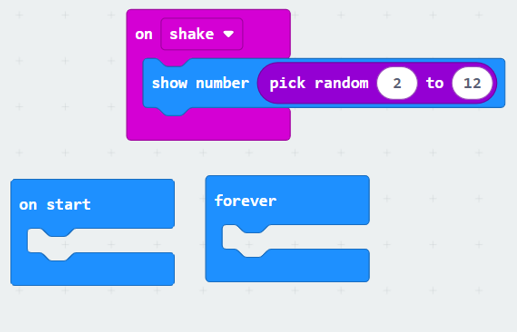
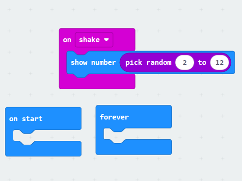
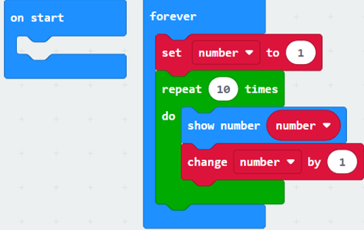
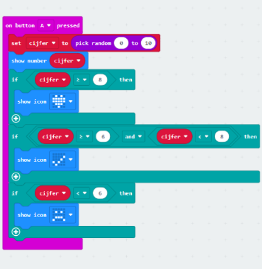

Vraag 1: Wat doet het "show leds"-blok? Antwoord: Het toont een afbeelding op de LED-schermen van de micro:bit.
Vraag 2: Waarom blijft het hart knipperen? Antwoord: Omdat het in het forever-blok staat, dat continue herhaald wordt.
Vraag 3: Wat is het verschil tussen het "on start"-blok en het "forever"-blok? Antwoord: Het "on start"-blok voert een actie uit bij het starten van het programma; het "forever"-blok voert de actie continu uit.
Vraag 4: Wat is een input? Antwoord: Een input is een signaal of data dat het begin van een proces aangeeft.
Vraag 5: Welke verschillende inputs heeft de micro:bit? Antwoord: Knoppen A en B, een combinatie van A + B, en beweging (versnelling).
Vraag 6: Wat is een output? Antwoord: Een output is een resultaat of een visuele/auditieve indicatie van een voltooid proces.
Vraag 7: Welke outputs heeft de micro:bit? Antwoord: LED-display en geluid (via een luidspreker of oortelefoon).
Vraag 8: Heb je handige websites gevonden? Antwoord: Geen specifieke websites gevonden.
Stap 3: Brainstorm over spelletjes met je team. Antwoord: Gedaan
Stap 4: Bedenk spelopties met de knoppen van de micro:bit. Antwoord: Ideeën voor spelletjes waarbij de knoppen A en B worden gebruikt om acties te initiëren.

Plaatje om te laten zien.
Opdracht 2.3: I ♥Dice
Stap 1: Ga naar MakeCode Micro:bit en druk op “New Project” en geef je project de naam ‘Dice’. Antwoord: Gedaan
Stap 2: Ga naar MakeCode Tutorials en volg de tutorial ‘Dice’. Antwoord: Gedaan
Vraag 1: Wanneer wordt de code in het "on shake"-blok uitgevoerd? Antwoord: Wanneer je de micro:bit schudt.
Vraag 2: Wat is het hoogst dat je kunt gooien met twee dobbelstenen? Antwoord: 12
Vraag 3: Vul hieronder de juiste getallen in om te kunnen gooien met twee dobbelstenen:

Afbeelding van de resultaten van een dobbelsteenworp.
Opdracht 2.4: Loops
Stap 1: Open op MakeCode Micro:bit een nieuw project en noem het project ‘Tellen’. Antwoord: Gedaan
Stap 2: Zorg ervoor dat, wanneer je de micro:bit aanzet, hij één voor één de getallen 1 t/m 10 op het scherm toont (Basic > Show number).
Vraag 1: Hoeveel commando’s heb je hiervoor nodig? Antwoord: 4 commando's
Vraag 2: Open het project hier en druk op “Edit code”. Wat is er fout gegaan? Antwoord: Het staat in forever en doet het niet goed.
Stap 3: Verwijder alle code uit het ‘forever’-blok. Voeg nu uit het menu ‘Loops’ het blok ‘for index from 0 to 10’ toe en verander de 10 in een 10.

Vraag 3: Wat gebeurt er wanneer je dit programma uitvoert? Antwoord: Dan gaat ie van 1 tot 10 tellen.
Vraag 4: Beschrijf in je eigen woorden wat het ‘for index from 0 to 10’-blok doet. Wat gebeurt er met de variabele ‘index’? Waarom zie ik de getallen 0 t/m 10? Antwoord: Er komt iedere keer als hij een nummer laat zien, gaat ie met 1 omhoog.
Vraag 5: Wat moet ik in de code veranderen om de getallen 0 t/m 100 te laten zien? Hoeveel regels code moet ik aanpassen? Antwoord: 1 regel code, je moet aanpassen met hoe vaak hij herhaalt.
Vraag 6: Zonder het te weten, heb je al een heel aantal keer gebruik gemaakt van een simpele loop. Weet je welk blok dit is? Antwoord: Repeat blok
Vraag 7: Ga naar MakeCode Loops en lees de beschrijving voor de verschillende soorten loops. Beschrijf in het verslag in je eigen woorden wat die loop doet.
For: Het herhaalt een aantal keer gebaseerd op een index.
While: Blijft herhalen zolang een voorwaarde op true staat.
Repeat: Herhaal aantal keren.
For of: Herhaal de code 1x voor iedere item in een lijst.
Vraag 8: Ik wil deze code uitvoeren voor ieder vies bord op het aanrecht. Welke loop kan ik het beste gebruiken? Antwoord: For of
Vraag 9: Ik wil de micro:bit zo instellen dat hij een seintje naar mijn C.V. stuurt, zolang het te koud is in mijn kamer. Welke loop kan ik het beste gebruiken? Antwoord: While
Vraag 10: Ik wil de getallen 0 tot en met 50 weergeven. Welke loop kan ik het beste gebruiken? Antwoord: Repeat
Vraag 11: Maak een nieuw project, noem het ‘repeat’ en maak de code zoals je hieronder ziet. Test het programma. Wat is het verschil met het vorige programma dat tot 10 telde? Welke van de twee vind je makkelijker om te gebruiken? Antwoord: In plaats van change index by one, staat er set index to index + 1. "Set index to index + 1" is makkelijker.
Vraag 12: Open het project hier en druk op “Edit code”. Wat doet het programma? Antwoord: Voor ieder automerk in de array herhaalt ie 1x alle automerken.
Vraag 13: Verander nu in het ‘forever’-blok ‘automerken’ in ‘voornamen’ door op het pijltje naast ‘automerken’ te klikken. Wat gebeurt er nu? Antwoord: Nu herhaalt ie voornamen in plaats van automerken.
Vraag 14: Deze foreach-loop pakt steeds de volgende voornaam uit de lijst ‘voornamen’ en toont die op het scherm. Ik wil nu dat de micro:bit een seconde wacht, voordat hij de volgende naam toont. Dit kan eenvoudig met het ‘pause’-commando. Waar moet ik dit commando neerzetten? Controleer of je antwoord werkt. Antwoord: Onder het "show string"-blok.
Opdracht 2.5: Wat als...
Vraag 1: Open het project hier en druk op “Edit code”. Vergelijk de code met die van het project hier. Wat is er anders? Antwoord: Bij die ene staat er if true
Vraag 2: Wat is er anders aan de output? Antwoord: Hij blijft oneindig herhalen
Vraag 3: Druk op het pijltje naar beneden naast ‘true’ in het ‘if’-blok en verander het in ‘false’. Wat is nu de output van de micro:bit? Antwoord: Er gebeurt niks
Vraag 4: Wanneer wordt de code in het ‘if’-blok uitgevoerd? Vul onderstaande zin aan: Als wat tussen “if” en “then” staat is Antwoord: true
Vraag 5: Hieronder zie je een aantal stellingen. Geef achter de stelling aan of deze ‘waar’ of ‘niet waar’ is.
A) 5 is groter dan 12 Antwoord: Niet waar
B) 8 is kleiner dan 20 Antwoord: Waar
C) 6 is kleiner dan 14 Antwoord: Waar
D) 8 is kleiner dan 5 Antwoord: Niet waar
E) 14 is even groot als 15 Antwoord: Niet waar
F) 13 is niet even groot als 42 Antwoord: Waar
Vraag 6: Voordat we de stellingen hierboven kunnen gebruiken in onze programma’s moeten we eerst weten hoe we (bijvoorbeeld) ‘5 is groter dan 12’ kunnen schrijven in code. Hiervoor moet je een aantal symbolen kennen. De meeste gebruikte symbolen vind je hieronder. Geef achter ieder symbool aan wat ze betekenen.
A) Antwoord: Als rechts groter is dan links
B) > Antwoord: Links groter is dan rechts
C) ≤ Antwoord: Gelijk aan of kleiner dan rechts
D) ≥ Antwoord: Gelijk aan of groter dan links
E) = Antwoord: Gelijk aan
F) != Antwoord: Niet gelijk aan
Vraag 7: Open het project hier en druk op “Edit code”. Wanneer je op de A-knop drukt, wordt er een random getal tussen 0 t/m 10 weergegeven. Wanneer het getal groter is dan een 6, wil ik daarna een vinkje weergeven. Bekijk de code en test het programma een paar keer. Waarom wordt er nu nog geen vinkje getoond? Antwoord: Omdat er staat als 0 groter is dan 6
Vraag 8: We hebben het eerder gehad over het opslaan van getallen. Waarin kunnen we getallen opslaan? We gaan het programma nu verbeteren.
Stap 1: Ga naar Variables > Make a Variable. Geef de variabele de naam ‘cijfer’.
Stap 2: Sleep nu de regel ‘set cijfer to 0’ bovenin het ‘on button A pressed’-blok.
Stap 3: Sleep nu het blok ‘pick random 0 to 10’ uit het ‘show number’-blok en sleep het naar de 0 in het ‘set cijfer to 0’-blok.
Stap 4: Sleep uit het menu Variables de variabele cijfer naar ‘show number 0’ én naar de 0 in het ‘if 0 > 6’-blok.
Stap 5: Test het programma. Toont de micro:bit nu een vinkje als het cijfer groter is dan 6? Antwoord: Ja
Vraag 9: Welke twee dingen kan ik veranderen, als ik ervoor wil zorgen dat er ook een vinkje wordt getoond als het cijfer 6 is? Antwoord: Verander de > naar ≥ en wijzig het vinkje naar een vinkje als het getal gelijk is aan 6.
Vraag 10: In het menu ‘Logic’ vind je onder het kopje ‘Boolean’ een ‘and’ en een ‘or’ blok. In beide blokken kun je twee vergelijkingen plaatsen. Wat is het doel van deze blokken? Antwoord: Om meerdere condities te gebruiken
Vraag 11: Hieronder zie je een aantal stellingen. Geef achter de stelling aan of deze ‘waar’ of ‘niet waar’ is.
A) 5 is groter dan 12 en 8 is kleiner dan 16 Antwoord: Niet waar
B) 8 is kleiner dan 20 of 8 is kleiner dan 4 Antwoord: Waar
C) 6 is kleiner dan 14 of 3 is kleiner dan 14 Antwoord: Waar
D) 8 is kleiner dan 5 en 3 is kleiner dan 8 Antwoord: Niet waar
E) 14 is even groot als 15 of 12 is kleiner dan 14 Antwoord: Waar
F) 13 is niet even groot als 42 en 21 is groter dan 3 Antwoord: Niet waar
Vraag 12: We hebben nu heel veel verschillende mogelijkheden om code uit te voeren als aan een bepaalde voorwaarde voldaan is, maar... Wat als we nu code willen laten uitvoeren als níet aan die voorwaarde is voldaan? 
Vraag 13: Test je programma. Werkt het helemaal goed? Zo niet, wat gebeurt er? Antwoord: Ja, het werkt.
Vraag 14: Misschien werkte je programma direct goed, maar je zag waarschijnlijk zowel een hartje als een vinkje, de eerste keer dat je het programma testte en een 8 scoorde. Nu kun je de controles hierop aanpassen, maar ook hiervoor zijn al eenvoudige functies ingebouwd. Sleep een ‘if’-blok naar het ‘on button A pressed’ blok. Druk nu op het plusje onderin dit ‘if’-blok. Wat gebeurt er, als je dit één keer doet? Antwoord: Dan komt er een else-blok bij.
Vraag 15: Wat voor blok komt erbij als je nog een keer op het plusje drukt? Antwoord: Dan komt er een else if-blok bij.
Vraag 16: Wat denk je dat deze blokken doen? Antwoord: Die voeren iets uit op basis van een bepaalde conditie.